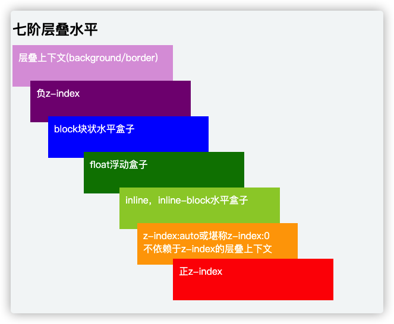

探索css中的z-index的原理
很多人经常使用z-index属性，大部分的人或许只知道是垂直于屏幕的一条线，并且值越大层级越高。但实际使用过程中，还是会碰到各种各种不可思议的坑。例如设了没效果？有效果但覆盖的顺序不对？如果你也有这方面的疑问就一起来看看吧。
z-index生效的条件
不是所有设置了z-index值的容器就一定有效果，必须是设置了position:relative/absolute/fixed/sticky。
See the Pen gOwEjdr by Joe (@JoeZhuo) on CodePen.
从上面的demo可以看出，设置非static之外的定位才能使z-index生效。同时如果只是设置了定位但没有设置z-index，z-index默认为auto。
z-index值
当设置了定位之后，z-index默认值为auto。同时z-index可以是正整数，负整数，零，auto等值。
z-index值比较
只有2个原则
- 后来居上 —如果没有显示声明大小的，后来的元素会优先覆盖前面的元素
- 谁大谁上 —z-index值大的覆盖小的
层叠水平stacking level

层叠上下文
层叠上下文，你可以理解为 JS 中的作用域，一个页面中往往不仅仅只有一个层叠上下文(因为有很多种方式可以生成层叠上下文，只是你没有意识到而已)，在一个层叠上下文内，我们按照层叠水平的规则来堆叠元素。
正常情况下，一共有三种大的类型创建层叠上下文：
- 默认创建层叠上下文
- 需要配合 z-index 触发创建层叠上下文
- 不需要配合 z-index 触发创建层叠上下文
默认创建层叠上下文
默认创建层叠上下文，只有 HTML 根元素，这里你可以理解为 body 标签。它属于根层叠上下文元素，不需要任何 CSS 属性来触发。
需要配合 z-index 触发创建层叠上下文
依赖 z-index 值创建层叠上下文的情况：
position 值为 relative/absolute/fixed(部分浏览器)
flex 项(父元素 display 为 flex|inline-flex)，注意是子元素，不是父元素创建层叠上下文
这两种情况下，需要设置具体的 z-index 值，不能设置 z-index 为 auto，这也就是 z-index: auto 和 z-index: 0 的一点细微差别。
前面我们提到，设置 position: relative 的时候 z-index 的值为 auto 会生效，但是这时候并没有创建层叠上下文，当设置 z-index 不为 auto，哪怕设置 z-index: 0 也会触发元素创建层叠上下文。
不需要配合 z-index 触发创建层叠上下文
- 元素的透明度 opacity 小于1
- 元素的 mix-blend-mode 值不是 normal
- 元素的以下属性的值不是 none：
- transform
- filter
- perspective
- clip-path
- mask / mask-image / mask-border
- 元素的 isolution 属性值为 isolate
- 元素的 -webkit-overflow-scrolling 属性为 touch
- 元素的 will-change 属性具备会创建层叠上下文的值
介绍完如何创建层叠上下文概念以及创建方式后，需要说明的是，创建了层叠上下文的元素可以理解局部层叠上下文，它只影响其子孙代元素，它自身的层叠水平是由它的父层叠上下文所决定的。
比较两个 DOM 元素显示顺序
- 如果是在相同的层叠上下文，按照层叠水平的规则来显示元素
- 如果是在不同的层叠上下文中，先找到共同的祖先层叠上下文，然后比较共同层叠上下文下这个两个元素所在的局部层叠上下文的层叠水平。
总结下来就是永远在同一个层叠上下文中比较。如果两个元素在DOM中不是同级关系的则找到他们最近的一个同属于同一个上下文的父节点比较。